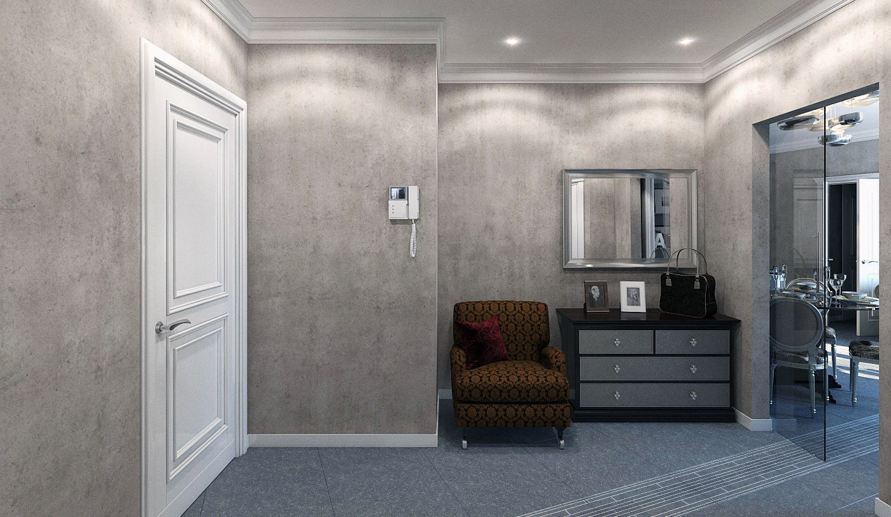
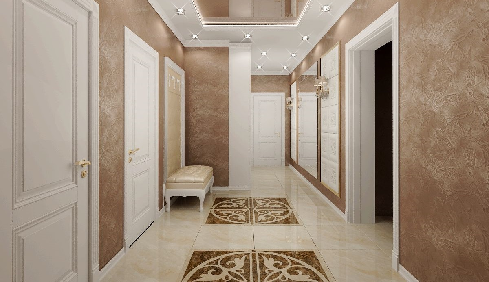

Штукатурка является прочным и долговечным материалом, но все ровно, по истечении определенного времени в условиях эксплуатации, она нуждается в ремонте и реставрации. Основными распространёнными причинами ремонта штукатурки служат механические повреждения, возникающие по причинам переноски мебели, проведении строительных работ и других факторов, при которых покрытие подвержено разрушению. Сейчас декоративная штукатурка используется в качестве отделки довольно часто. Такой тип отделки можно встретить не только в частных домах, но и в квартирах.
При правильной эксплуатации и соблюдении некоторых правил, можно предупредить возникновения проблем и появление различных дефектов. Это сделать значительно проще, чем после заниматься трудоемким ремонтом.

Предотвращение появления трещин и дефектов
Самая частая и распространенная проблема появления дефектов на поверхности штукатурки — ее неправильное наложение. Перед тем как приступать к отделочным работам, необходимо тщательно выравнять стены, убрать все трещины. Для предотвращения появления трещин в будущем, используют строительный флизелин или стеклохолст. Поверхность должна быть достаточно влажной, не сухой. Класть штукатурку в очень сухом помещении нельзя, при необходимости воздух дополнительно искусственно увлажняют.
Если штукатурную смесь необходимо готовить самостоятельно (продаются уже готовые смеси), то следует внимательно соблюдать пропорции, которые указаны на упаковке. Неправильно приготовленная смесь потрескается быстро или даже полностью отвалится.
Если же дефекты незначительные и возникли по другими причинам, поверхность можно отреставрировать и придать штукатурке первоначальный вид. Перед тем как приступать к работе, проконсультируйтесь со специалистами. Они смогут подсказать вам, как правильно реализовать ремонт декоративной штукатурки и что для этого необходимо.
Особенности реставрации
Восстановить декоративную штукатурку можно самостоятельно лишь в том случае, если повреждения незначительные или у вас есть опыт в отделочных работах. Во всех иных случаях лучше сразу обратиться к профессионалам. Неправильный подход к ремонту может привести к непредсказуемым последствиям и вы просто испортите стены окончательно, а не добьетесь положительных результатов.
Если планируете восстанавливать декоративную штукатурку самостоятельно, помните о том, что тип и состав новой штукатурки должен максимально совпадать со старым. Также учитывайте и то, что придется постараться, чтобы в точности повторить старый рельеф и рисунок.
Если сомневаетесь в своих силах, лучше заказать ремонт декоративной штукатурки в специализированной компании. Профессионалы сами определят какой именно ремонт нужен, подберут материалы и выполнят работу качественно и оперативно.

Куда обратиться?
Если интересуют услуги ремонта декоративной штукатурки, не теряйте времени даром, обратитесь сразу в нашу компанию. Мы предлагаем качественные работы по ремонту и восстановлению декоративно отштукатуренных стен, делаем все в строго установленные сроки. В работе мы используем только качественные материалы, тщательно подбираем их. Все работы выполняются поэтапно, с четким соблюдением всех норм и требований, поэтому результат получается идеальным.
Уже огромное количество клиентов отметили наш профессионализм и ответственность, об этом говорят многочисленные положительные отзывы. Если вам срочно нужен ремонт штукатурки в Нижнем Новгороде, свяжитесь с нами и оставьте свою заявку. Специалист приедет на место, оценит спектр работ и сложность. Все работы будут выполнены качественно и в строго определенные сроки — мы это гарантируем!